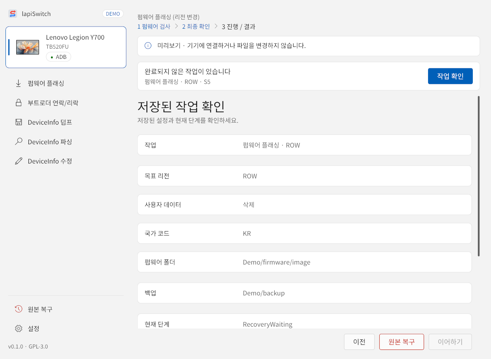
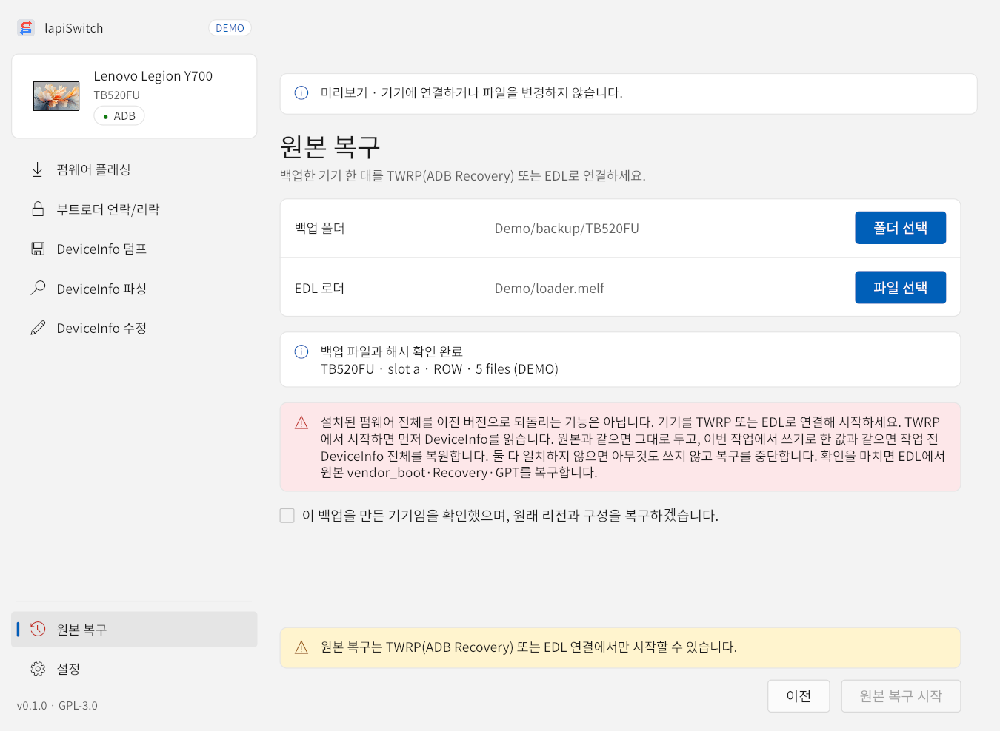

1이어하기
작업 도중 앱이 꺼졌거나 대기를 중지했다면, 앱을 다시 열었을 때 위쪽에 “완료되지 않은 작업이 있습니다” 안내가 나옵니다. 아래 작은 글씨는 작업 종류, 목표 리전, 저장된 단계입니다(예: 펌웨어 플래싱 · ROW · S5). 작업 확인을 누르세요.

- 저장된 작업, 목표 리전, 사용자 데이터, 국가 코드, 펌웨어 폴더, 백업 위치, 현재 단계를 확인합니다.
- 안내를 읽고 “저장된 설정과 이어갈 작업을 확인했습니다”를 체크합니다. 체크해야 이어하기가 활성화됩니다.
- 이어하기를 누릅니다. 이어가지 않고 원래대로 되돌리려면 원본 복구를 누릅니다.
이어갈 작업이 남아 있는 상태에서 새 작업을 시작하면 이전 작업 보관 후 새로 시작 확인창이 나옵니다. 확인을 누르면 이전 작업을 중단하고 새 작업을 준비하며, 기존 백업과 로그는 보존됩니다.
2원본 복구
왼쪽 메뉴의 원본 복구는 작업이 중간에 멈춰 기기가 어중간한 상태로 남았을 때, 그 작업이 시작할 때 만든 백업으로 기기를 작업 전 구성으로 되돌리는 기능입니다. 완료된 작업을 취소하는 기능이 아니라, 끝나지 못한 작업을 안전하게 거두는 기능입니다.
원본 복구가 되돌리는 것
- 원본 vendor_boot·Recovery·GPT — 작업은 TWRP로 부팅하려고 이 파티션들을 잠시 바꿉니다. STEP 03에서 백업한 원본으로 되돌리고 다시 읽어 검증합니다.
- 작업 전 DeviceInfo 전체(4096바이트) — 작업이 DeviceInfo를 이미 썼다면 TWRP에서 작업 전 값으로 되돌리고 검증합니다. 리전, 부트로더 플래그, 롤백 인덱스, 그 밖에 바꾼 필드가 모두 원래대로 돌아갑니다.
삭제된 사용자 데이터나 설치된 펌웨어 버전처럼 위 두 가지가 아닌 것은 되돌리지 않습니다.
복구할 수 있는 상황
공통 조건은 STEP 09 펌웨어 설치가 시작되기 전에 멈춘 작업이라는 것입니다. 펌웨어 플래싱, 부트로더 언락/리락, DeviceInfo 덤프·수정 모두 해당합니다.
| 작업이 멈춘 시점 | 기기 상태 | 원본 복구가 하는 일 |
|---|---|---|
| STEP 03 원본 백업 후 ~ STEP 05 TWRP 연결 |
GPT·Recovery가 TWRP용으로 바뀐 상태입니다. 켜면 TWRP로 부팅되거나 정상 부팅이 되지 않을 수 있습니다. DeviceInfo는 그대로입니다. | DeviceInfo는 건드리지 않고, EDL에서 원본 vendor_boot·Recovery·GPT만 복구합니다. TWRP 연결이 필요 없습니다. |
| STEP 06 DeviceInfo를 읽은 뒤, 쓰기 전 |
편집 창이나 롤백 인덱스 경고가 떠 있는 동안 앱이 꺼졌거나 연결이 끊긴 경우입니다. DeviceInfo는 아직 그대로입니다. | 위와 같습니다. DeviceInfo에는 쓰지 않고 원본 파티션만 복구합니다. |
| STEP 06 쓰기·검증 후 ~ STEP 07 EDL 연결 |
DeviceInfo가 이미 바뀌었고, 파티션은 아직 TWRP용입니다. 리전이 바뀌었다면 기존 펌웨어와 리전이 맞지 않아 부팅되지 않을 수 있습니다. | TWRP에서 작업 전 DeviceInfo를 되돌려 검증한 뒤, EDL에서 원본 파티션을 복구합니다. |
| STEP 08 원본 복구 후 ~ STEP 09 시작 전 |
파티션은 원래대로지만 DeviceInfo는 바뀐 상태입니다. 펌웨어 플래싱이라면 리전만 바뀌고 펌웨어는 예전 것이라 부팅되지 않을 수 있습니다. | 위와 같습니다. DeviceInfo를 작업 전 값으로 되돌리고 원본 파티션을 다시 확인·복구합니다. |
| 원본 복구가 중간에 멈춤 | 원본 복구 도중 연결이 끊겼거나 대기를 중지한 경우입니다. | 같은 백업으로 다시 시작하면 복구 기록을 이어받습니다. 이미 되돌리고 검증한 DeviceInfo는 다시 쓰지 않습니다. |
편집 창에서 작업 취소 · 원본 복구를 누르거나, 롤백 인덱스 경고에서 작업을 취소하면 앱이 이 과정을 자동으로 진행합니다. 자동 복구가 중간에 멈췄다면 여기서 같은 백업으로 다시 시작하세요.
복구할 수 없는 상황
| 상황 | 이유와 대신 할 일 |
|---|---|
| STEP 09 펌웨어 설치가 시작된 뒤 | 새 펌웨어가 일부라도 기록되면 예전 GPT·Recovery로 되돌리는 것이 오히려 위험해서 차단합니다. 이어하기(이어하기)로 펌웨어 설치를 끝까지 진행하세요. |
| 정상적으로 끝난 작업 | 완료된 작업은 복구 대상이 아닙니다. 부트로더는 반대 작업(언락 ↔ 리락)으로, DeviceInfo 값은 DeviceInfo 수정으로, 리전은 원래 리전 펌웨어로 다시 플래싱해 되돌립니다. |
| DeviceInfo 쓰기 결과를 알 수 없음 | 쓰는 도중 연결이 끊겨 검증 자료가 없으면, 원본으로 되돌려도 되는지 판단할 수 없어 자동 복구를 거부합니다. 먼저 이어하기로 앱이 기기 값을 다시 읽어 결과를 확인하게 하세요. |
| TWRP에서 읽은 DeviceInfo가 예상과 다름 | 원본도, 이번 작업이 쓴 값도 아니면 다른 도구나 작업이 값을 바꾼 것일 수 있어 아무것도 쓰지 않고 중단합니다. |
| 백업이 손상되었거나 다른 기기 | 백업 파일이 바뀌었거나 빠졌거나(해시 불일치), 연결한 기기가 백업한 기기와 다르면 거부합니다. 백업 폴더는 폴더째로 보관하세요. |
| 이전 버전 앱의 백업 | 이 버전에서 열 수 없습니다. 그 백업을 만든 버전으로 복구하세요. |
| EDL에도 TWRP에도 연결되지 않음 | 원본 복구는 기기와 통신할 수 있어야 합니다. 하드웨어 문제로 9008(EDL) 장치가 잡히지 않으면 쓸 수 없습니다. |
| 예전 펌웨어로 되돌리기 | 설치된 펌웨어 전체를 이전 버전으로 되돌리는 기능은 없습니다. |
복구 순서

- 백업한 그 기기 한 대를 TWRP(ADB Recovery) 또는 EDL로 연결합니다. 기기가 TWRP로 부팅되면 그대로 연결하고, 부팅이 안 되면 EDL(9008)로 진입시킵니다.
- 폴더 선택으로 멈춘 작업의 백업 폴더(예:
backup\firmware_flashing\TB520FU_…)를 고릅니다. 앱이 백업 파일과 해시를 확인하고 모델·슬롯·리전·파일 수와 DeviceInfo 상태(쓰기 전 / 변경 검증 완료 / 결과 불명)를 보여 줍니다. - 파일 선택으로 기기에 맞는 EDL 로더를 고릅니다.
- 빨간 안내를 읽고 “이 백업을 만든 기기임을 확인했으며, 원래 리전과 구성을 복구하겠습니다”를 체크합니다.
- 원본 복구 시작을 누릅니다. 진행은 파일 검사 → EDL 연결 → 원본 복구·검증 → 마무리 순서입니다.
TWRP에서 시작할 때와 EDL에서 시작할 때
- TWRP에서 시작 — 먼저 DeviceInfo를 읽어 비교합니다.
- 원본과 같으면 DeviceInfo에는 쓰지 않습니다.
- 이번 작업이 쓴 값과 같으면 작업 전 DeviceInfo 전체를 쓰고 검증합니다.
- 둘 다 아니면 아무것도 쓰지 않고 중단합니다.
- EDL에서 시작 — DeviceInfo를 쓰기 전에 멈춘 작업이면 바로 원본 파티션을 복구합니다. DeviceInfo가 바뀐 작업이면 앱이 현재 리전에 맞춘 vendor_boot와 공식 TWRP를 준비해 TWRP로 재부팅한 뒤, 위와 같이 DeviceInfo를 되돌리고 EDL에서 파티션을 복구합니다.
복구가 끝나면 해당 작업 기록은 보관 처리되어 이어하기 목록에서 사라집니다. 원본 복구를 시작한 백업으로는 그 작업을 다시 이어갈 수 없으니, 다시 하려면 새로 시작하세요.